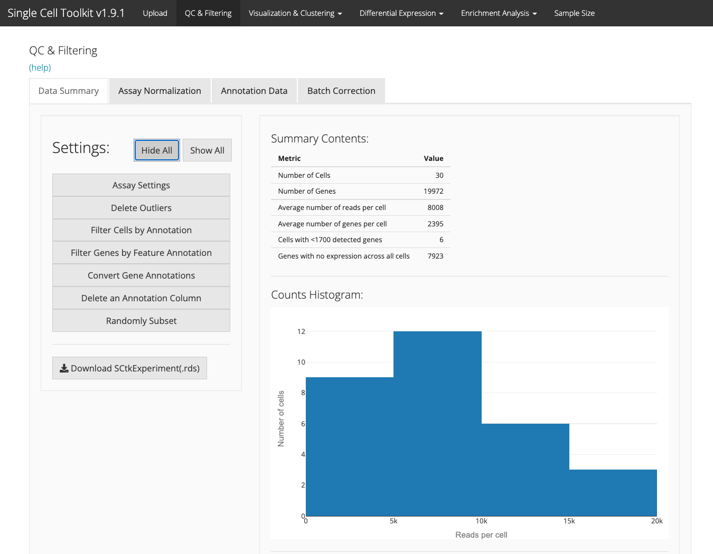

QC and Filtering Tab
Single Cell Toolkit
David Jenkins
The Section of Computational Biomedicine, Boston University School of Medicine, Boston, MA;Program in Bioinformatics, Boston University, Boston, MAdfj@bu.edu
Mohammed Muzamil Khan
The Section of Computational Biomedicine, Boston University School of Medicine, Boston, MA;Program in Bioinformatics, Boston University, Boston, MAmmkhan@bu.edu
W. Evan Johnson
The Section of Computational Biomedicine, Boston University School of Medicine, Boston, MA;Program in Bioinformatics, Boston University, Boston, MAwej@bu.edu Source:
vignettes/v04-tab02_QC-and-Filtering.Rmd
v04-tab02_QC-and-Filtering.Rmd
Introduction
The quality control (QC) and filtering tab provides several summary statistics and ways to filter your data. The summary statistics and filtering are performed on the selected assay, which can be changed using the “Select Assay” drop-down.
Data summary table

The summary table provides several summary statistics about your data including:
- The number of cells
- The number of genes
- The average number of reads per cell
- The average number of genes per cell
- Cells with fewer than the selected cutoff expressed genes
- Genes with no expression across all cells
Filtering
Several filtering options are available
Delete outlier genes and cells

Data can be filtered by user selected cutoff values including:
- Remove genes with no expression across all cells. These genes are uninformative
- Minimum detected genes per cell. Cells with few expressed genes could indicate an empty well.
- Percent low gene expression. This filter will remove the genes with the least expression in the dataset
- If there are specific cells that should be excluded from the dataset
When you have set the cutoff filters to the desired level, you can filter data with the “Filter Data” button.
Reset to orginal data
The SCTK saves a copy of the originally uploaded data, which can be restored by clicking the “Reset All” button in the “Delete Outliers” section.
Filter cells by annotation
Data stored in the annotation data frame can be used for sample filtering. Choose a column from the annotation data frame, the values from this column to keep, and click “Filter.”
Filter genes by feature annotation
Similarly, gene annotations can be used to filter genes. Select a column from the row data frame and the values to keep and click “Filter.”
Convert gene annotations
The SCTK can use annotation data from Bioconductor annotation packages such as org.Hs.eg.db to convert gene annotations between standard annotation types such as Entrez gene ids, Ensembl gene ids, or gene symbols. By default, these packages are not installed, so you will need to manually install the package for your appropriate organism. Instructions for installation can be found on the Bioconductor website
Delete an annotation column
You can remove an unnecessary or unwanted annotation column by selecting it and clicking the “Delete Column” button.

Assay Normalization
The assay normalization tab allows the user to conduct simple and complex normalization procedures on the assays in the SCTK experiment object. These include log and counts-per-million transforms, as well as library size normalization by scater and scran. It also lists the assays (raw and normalized) that are available in the object.


Annotation Data
The annotation tab displays the annotation matrix.

Replace Annotation Data
To modify the annotation data frame, download the annotation data using the “Download Annotation Data” button, modify the data using a text editor or Excel, save the data as a .csv file, and re-upload the data in the “Upload and replace the annotation data” field.
Batch Correction
Note that Batch correction has its own vignette and link: Batch Correction Tab
Session info
## R version 4.1.2 (2021-11-01)
## Platform: x86_64-apple-darwin17.0 (64-bit)
## Running under: macOS Big Sur 10.16
##
## Matrix products: default
## BLAS: /Library/Frameworks/R.framework/Versions/4.1/Resources/lib/libRblas.0.dylib
## LAPACK: /Library/Frameworks/R.framework/Versions/4.1/Resources/lib/libRlapack.dylib
##
## locale:
## [1] en_US.UTF-8/en_US.UTF-8/en_US.UTF-8/C/en_US.UTF-8/en_US.UTF-8
##
## attached base packages:
## [1] stats graphics grDevices utils datasets methods base
##
## other attached packages:
## [1] BiocStyle_2.22.0
##
## loaded via a namespace (and not attached):
## [1] rstudioapi_0.13 knitr_1.38 magrittr_2.0.3
## [4] R6_2.5.1 ragg_1.2.2 rlang_1.0.2
## [7] fastmap_1.1.0 stringr_1.4.0 tools_4.1.2
## [10] xfun_0.30 cli_3.2.0 jquerylib_0.1.4
## [13] systemfonts_1.0.4 htmltools_0.5.2 yaml_2.3.5
## [16] digest_0.6.29 rprojroot_2.0.3 pkgdown_2.0.2
## [19] bookdown_0.25 textshaping_0.3.6 BiocManager_1.30.16
## [22] purrr_0.3.4 sass_0.4.1 fs_1.5.2
## [25] memoise_2.0.1 cachem_1.0.6 evaluate_0.15
## [28] rmarkdown_2.14 stringi_1.7.6 compiler_4.1.2
## [31] bslib_0.3.1 desc_1.4.1 jsonlite_1.8.0